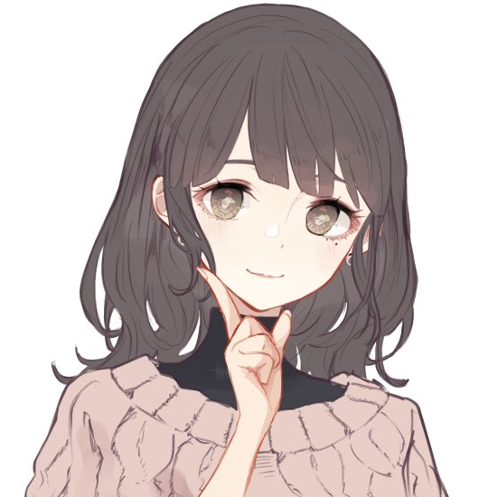
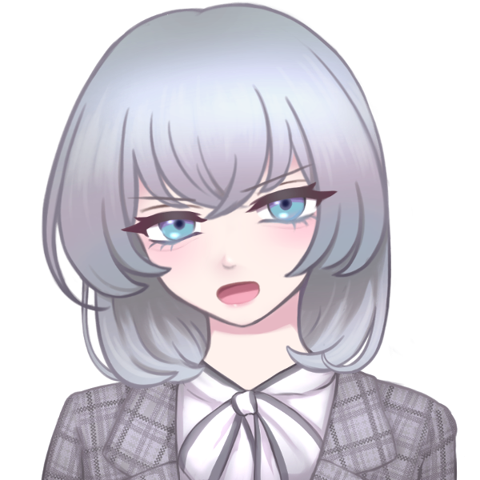

GM:方舟
メインログ /
雑談ログ
キャラシート
PC1：天海こよみ (キャラシート) PL：めい
PC2：虹之元ユメ (キャラシート) PL：雅
PC3：琵琶坂藍依 (キャラシート) PL：ふろずん
PC4：夢川めめ (キャラシート) PL：MEUR
PC5：澱カシル (キャラシート) PL：タンゴ
目次
ハンドアウト・NPC・ステージ設定
■オープニングフェイズ
00 空を失った日
01 北風は何を運ぶ
02 衝撃デビュー
06/15ログ開始ポイント
ハンドアウト・NPC・ステージ設定
■PC1：アイドルオタク
ロイス：十条ミツキ 推奨感情 P: 憧憬/N: 不信感
カヴァー/ワークス : 指定なし/指定なし
キミはアイドルオタクだ。
最推しの名前は十条ミツキ。
かつてカリスマ的人気を誇った地下アイドルである。
現場に通い続けた結果、君はミツキから認知され、気に入られるほどの仲となっていた。
しかし、ある日彼女は熱愛報道で炎上。
それに伴う『卒業』と同時に、一切の消息がわからなくなってしまっていた。
ミツキの卒業から1年ほど経ったある日、キミは特別な力を自覚する。
その力を狙い、迫る魔の手。
危うく殺されかけたキミを庇ったのは、今日まで決して忘れる事がなかった最推しの彼女──UGNエージェント“クリスタルホロウ”十条ミツキだった。
※PC1へのお願い：キミには“クラッドカルト”という名の協力型のレネゲイドビーイングが取り憑きます。
彼の知能は非常に低く、会話や戦闘面での貢献等はありませんが、シナリオ中に行う「アイドル活動」において、達成値が+1d10されます。
■PC2：UGNエージェント
ロイス：“らみぃどらいぶ！”のどちらか 推奨感情 P: 好奇心/N: 嫌悪感
カヴァー/ワークス : 指定なし/UGNエージェント
キミはオーヴァードだ。
日常生活を送っていた中、不意にワーディングが使用された気配を察知する。
現場に駆け付けると、PC1を庇う形で、UGNエージェント“クリスタルホロウ”十条ミツキが交戦しているところに出くわす。
敵は、“らみぃどらいぶ！”という名の二人組女性アイドルグループだ。
キミの助太刀により、彼女らを退ける事ができたが、再度PC1を狙うかのような発言を残していった。
戦闘経験の浅いPC1を一人にするのは危険だ。
キミには、UGN芸能支部長“ミスター・オーメン”より、PC1の教育係としての任務を与えられる。
……それは良いとして、アイドルになれってどういう事？
■PC3：UGNエージェント・イリーガル
ロイス：“ミスター・オーメン” 推奨感情 P: 連帯感/N: 不信感
カヴァー/ワークス : 指定なし/指定なし(UGN関係者)
キミは元アイドルのオーヴァードだ。
何かしらの理由でアイドルを引退した過去がある。
芸能界から離れ、UGN所属のオーヴァードとしての日々を送っていたキミの元に、突然、仮面をつけた男がやって来た。
男の名はオーメン相良、またの名を“ミスター・オーメン”。
「UGN芸能支部」もとい、「UGNプロダクション株式会社」にて、支部長兼社長兼プロデューサー業を営んでいる。
作戦の一環でアイドルグループを立ち上げる為、経験者のキミに是非加入してほしいとの事だ。
■PC4：メン地下通い
ロイス：紫吹レイジ 推奨感情 P: 純愛/N: 隔意
カヴァー/ワークス : 指定なし/指定なし(UGN関係者)
キミは、メンズ地下アイドル通いをしているオーヴァードだ。
キミには担当アイドルがいる。
彼の名前は紫吹レイジ。
メンズ地下アイドルグループ「EYES ONLY」に途中加入したメンバーだ。
キミは、彼が新メンバーであった頃から目をかけているTO（トップ・オタク）だ。
しかし最近は、彼のオタクが増え、他のオタクからの牽制が強まりつつある。
こうなれば、数ヶ月後に行われるレイジの生誕祭で、誰がTOであるかを思い知らせるしかない。
勤め先(複数あるなら、そのうちの一つ)であるUGNから、かなり良い条件の任務の人員募集があった為、キミはオーディションに参加する事とした。
これはネタバレだが、キミがメン地下通いをしている(していた)事実は、後に世間に暴露される事となる。
■PC5：UGNエージェント・イリーガル
ロイス：“クラッドカルト” 推奨感情 P: 好奇心/N: 隔意
カヴァー/ワークス : 指定なし/指定なし(UGN関係者)
キミはオーヴァードだ。
キミは、何らかの理由で、“クラッドカルト”というレネゲイドビーイングを知り、これの調査を行う必要がある。(UGN日本支部その他組織からの調査依頼、“クラッドカルト”を自分の物にしたい、など)
彼のレネゲイドビーイングを取り巻く作戦がスタートする事を知り、キミはUGN芸能支部が行う任務──アイドルグループを作るらしい──のオーディションに参加。潜入捜査を開始する。
（※ごちゃごちゃ書いていますが、フリー枠という事です。なんだかんだ合流して一緒にアイドルしてくれるなら、上記の通りじゃなくても良いです）
“クリスタルホロウ” 十条ミツキ（じゅうじょう・みつき）
 「アタシ、キミを武道館に連れて行きたい。人生最高の景色を、キミと一緒に見たいんだ」
「アタシ、キミを武道館に連れて行きたい。人生最高の景色を、キミと一緒に見たいんだ」
元カリスマアイドル。空色担当。19歳。
TOXiC blueというグループの人気No.1メンバーで、エースボーカルを担当していた。
透明度の高い歌声が魅力。
気だるげな雰囲気を持つように見えるが、実は人懐っこく寂しがり屋。
ファンの事を第一に考えており、アイドルに懸ける情熱は誰より熱い。
それだけに、彼女が不祥事を起こした時の世間の衝撃は、非常に大きい物だった。

引退後はシルバーグレーのミディアムボブになる。卓中ではこっちの姿の方が長い。
TOXiC blue（トキシックブルー🔹ドクアオ）
「夜が明けるまで、キミと共に」
中毒的なまでの「青」を捧げる、ガールクラッシュ系アイドルグループ。
従来の女性アイドル「っぽさ」とは違い、愛嬌ではなくパフォーマンスで勝負するグループ。
メンバー全員が、歌やダンスなど、強く秀でた部分を持っている。
「青」というのは、夜明け前の空や、幸せや平和、青春などを表しており、人々の希望となる事をコンセプトに掲げている。
青がコンセプトなので、メンバーカラーも寒色メイン（青、空、紫、白、黄）。ペンライトが付くと会場が綺麗な感じに光る。
「夜」「夜明け」「雨」などがキーワードとなるかっこいい曲が中心だが、たまに「青空」っぽい清楚系統にも手を出す事がある他、夏になると1曲だけやたら元気な曲を出す恒例行事がある。
アイドルとしての十条ミツキ（長い）
在籍期間：3年
年齢：15〜18歳(※シナリオ時点では19歳)
メンカラ：空色担当
空と書いて「カラ」と読む、突き詰めていえば透明担当。ペンライトの色は水色。
ソロ曲：Drop in the Moon
正確に言えばソロではないが、歌割りが多め。作詞はミツキ自身が行なっている。
「アタシが輝けているのはキミたちがいるから」「ずっと一緒にいようね」といったニュアンスの内容が歌われる、バラード風の曲。
来歴：
アイドルとなったきっかけは、顔の良さからいわゆる「ビジュアル枠」としてスカウトされ、「なんとなく」始めた事。
アイドルに対する興味こそあれどやる気はなく、パフォーマンスも凡庸であった。
しかし、初めてステージに立った際に、応援してくれるファンができた一方で、「ミツキは顔だけで他はいまいち」と感想を言われた事で逆に火がついた。
そこから猛練習を重ね、特に「歌」のスキルを重点的に強化。
そして、デビューから1年ほど経った頃、現場に来るファンの「すごいカリスマ性を秘めた子がいる」という口コミなどから爆発的にファンが増加。
特に、現場に来たファンについては惹きつけて離さない、人気No.1のメンバーとなった。
外見：
身長160cm。華奢な体格。
ボブ風のウルフヘア・通称クラゲヘアと、透けるようなハイトーンの髪色が特徴。野外フェス時など、太陽に透けた時は不思議と虹色に見える。
伏し目がちの長いまつ毛と、そこから覗く澄んだ瞳が綺麗。
内面：
「アイドル」である自分に対するプライドとストイックな発言、クールな表情と佇まいから誤解されがちだが、決して天才ではない。
その為、たまにどこか抜けた一面を見せる事がある。
また、最初の頃に「顔以外いまいち」だと評価された事をいまだに引きずっている様子で、少しだけ自信なさげ。
そんな自分を肯定してくれるファンの為、少しでもパフォーマンスを向上させたいと言う。
メンバーは、「ミツキには本当に不思議な魅力がある」と評価しつつ、彼女の横に立てるメンバーになるために頑張る、と良い刺激を受けている様子。
自分に対しては厳しいが、ファンに対してはかなり甘い。
少しでも愛されるグループを作れるよう、自分のパフォーマンスの向上はもちろんの事、アイドルグループ運営や作詞に関する勉強も進めていた。
“らみぃどらいぶ！” あみぃ・らむね

 「可愛いは正義って言葉、あたしだーい好き♡」「らむ達の方が可愛いって事だもんね」
「可愛いは正義って言葉、あたしだーい好き♡」「らむ達の方が可愛いって事だもんね」
二人組のアイドル兼晒し系配信者。黒い方が「あみぃ」、白い方が「らむね」。共に15歳。
絵に描いたようなクソガキ。若さゆえに恐れ知らず。
普段は暴露配信をして日銭を稼いでおり、ファンサービスの一環でアイドルをしている。
ネットの一部では有名。ファン達は、彼女が好き放題暴れる姿にカタルシスを感じたり、アンチのような立場のプロレスを楽しんだり、保護者のようなスタンスで見守ったりしている。
らみぃどらいぶ！（らみぃどらいぶ🚔らみどら）
「人生って最高！あたし達は最強！」
『無敵』になりたい2人組を優しく見守る、現在進行系黒歴史クソガキアイドルグループ。
アイドル専業ではなく、晒し系配信者としての活動がメイン。
その為、芸能事務所には所属しておらず、衣装やヘアメイクはメンバー自らが行っている。楽曲はネットのクリエイターらに自ら依頼して作成してもらっている。
インターネット発らしいアップテンポな曲調と、世間知らずの10代だからこそ歌える強気すぎる(痛い)歌詞が特徴。
ただ、楽曲作成の依頼先がアイドルソングに慣れておらず、ダンスと並行して歌う事を前提としていない難易度である事から、ライブ中は基本的に被せ(声付きの音源をBGMに流す)に頼っている。
その代わり、ファンへの煽りやコール＆レスポンス、ヘドバンやモッシュの指示によって、最終的に謎の一体感があるステージを作り出している。
“ミスター・オーメン” オーメン相良
「まだ、『アイドル』を諦めていないのだろう？」
支部長兼社長兼プロデューサー。年齢不詳。
顔に仮面をつけており、大変胡散臭い。会話も通じない。仮面は感情に合わせて変化する。
過去の経歴は不明だが、プロデューサーとしての手腕はピカイチと言われている。滅茶苦茶に見える采配を行いながら、不可能である事も可能にする。
『アイドル』を通じ、皆を幸せにしたいという信念を持っている。
紫吹レイジ（しぶき・れいじ）
 「君は意外と欲張りさんだね？」
「君は意外と欲張りさんだね？」
メンズ地下アイドル。22歳。
「EYES ONLY」のメンバー。ディープバイオレット担当。「魅せる」ダンスが得意であり、器量よし、性格よしの理想の推し。
グループのお兄ちゃん的存在。ファン対応も非常に優しく、包容力があるが、一定の距離以上には踏み込ませないミステリアスな男。
しかし、TOであるPC4に対しては多少心を開いている様子で、誘えばプライベートを使ってライブに来てくれる。
EYES ONLY（アイズオンリー🧪アイオン）
「後戻りの許されない旅へ」
禁忌に触れる科学者をモチーフとした、ヴィジュアル系メンズアイドルグループ。
このグループの曲は、単体として聞けばどこか捉えどころのない物ばかりだが、実はとある一つの物語を描き続けている。
コンセプトである「科学者」は、その物語の主人公。彼の研究目的は、「愛」という物の存在証明。
愛を知らぬ彼は、非人道的な研究を行いながらも、自身の知識的欲求を満たす為の旅を続けている。
ファンは、彼の旅に同行する助手であると仮定されているが、研究に関わる事が許されていない。ゆえに、ファンネームは、閲覧のみを許された存在である『EYES(アイズ)』。
なお、結局は地下アイドルであり、考察勢も少ない事から、この要素はほとんどのファンからスルーされている。
このグループが特に評価されているのは、「ダンスパフォーマンス」である。
白衣をモチーフとしたロングコート衣装を纏いながら、アクロバットをしてみせるメンバーや、表情から指先まで管理された「惹きつける」演技をみせるメンバーなど、表現技法も多岐に渡る。
アイドルとしての紫吹レイジ（長い）
在籍期間：8ヶ月ほど
年齢：22歳(大学生)
メンカラ：ディープバイオレット担当
来歴：
アイドルとなったきっかけは、街中でのスカウト。
当時、バイトを辞めた直後であったこと、且つ大学での研究を通じ、舞台そのものに興味があったことから、そのスカウトを受け入れたと語っている。
ステージ上では、繊細な表情管理や、指先までに込められたダンスの表現が好評。
体力自慢というわけではなく、激しいダンスをする事はないが、アイオンの曲に良く似合う仄暗いセクシーさがある。
日々のダンス練習に加えて「こうすればより良く見えるのでは」と研究を重ねているとの事。
他のメンバーの発言から、有名大学の文学部に通っているという事が判明しているが、それ以上のプライベートや経歴については、TOですら知らない。
仮にストーキングしたとしてもいつの間にか撒かれる、ある意味完璧な『アイドル』。
「EYES ONLY」自体が4年ほど続いているグループであり、それぞれのメンバーにファンがいる中での新規メンバーであった事から、加入当初はそこまで人気がなかった。
しかし、最近は「ビジュが良い、なんかエロい」「プライベートの管理がしっかりしてて推せる」と評判となり、じわじわとファンが増えている。
外見：
身長186cm。手足が長く、股下5mくらいある気がする。
黒髪。前髪は長め。やや彫りが深く、二重幅も広い、あまり日本人的ではない容姿。
どこか王子様風な外見と振る舞いから、ファンや一部メンバーからは「レイ様」とも呼ばれている。
内面：
一人称は「僕」、二人称は「君」。
思慮深く、周囲を俯瞰してよく見ている。
加入当初はどこかピリついた雰囲気を持っており、メンバーから怖がられていたが、様々な場面で気を回す姿から「いい人なのかも」と打ち解け、頼りにされるようになった。
別に最年長というわけではないが、しっかり者としてお兄ちゃん扱いされている。新メンバーでありながら、MCを担当する事も多い。
ステージ上や特典会、SNSでのライブ配信などでは、ミステリアスでクールな、Sっぽいキャラ。ナルシスト的な発言もよく見せる。
ただ、決して堅物ではなく、ライブのMCなどでは、ネタの一環で他メンバーをお姫様扱いするなど、キャラを崩さないままふざけた行動を取ることがある。
ファンの顔をすぐに覚える。サービスもよく、服装の細かいところに気づいて褒めたり、チェキ撮影時にさりげなく抱き寄せたりなど、乙女心を躊躇なく刺激する。
“クラッドカルト”
 PC1に取り憑いたレネゲイドビーイング。
PC1に取り憑いたレネゲイドビーイング。
宿主とされた者は、否応なしに人の注目を集める事となる。それ以上の情報は不明。
画像は特に関係のない麗はゅ。ちゃんです、PC5のシナリオロイスから降格して使い所がなくなった立ち絵①です。
クラッドカルトには実体を持たないので、立ち絵はありません。寂しいからはゅを添えます。
■オリジナル設定
・「UGN芸能支部」について
UGNエージェントのみで構成された芸能事務所。
FHのアイドルグループ「ファムファタール」の台頭に対し、危機感を覚えたUGN日本支部が設立した。
表では「UGNプロダクション株式会社」という名で通っている。
社名の由来は、所属タレントに大切にしてほしい3つの言葉（ユニーク、ガッツ、ネクサス）。
FHの後追いで始めた事業であり、設立から1年も経っていない事から、業界でもUGN内でも名が知られていない。
また、UGN内でも謎の組織として扱われている様子で、支部長であり社長でもある”ミスター・オーメン”ことオーメン相良についても、経歴が明かされていない。
・「アイドル活動」について（仮）
フレーバー要素。
シナリオ中にある「ライブ」や、任意のタイミングで判定を行い、描写の説得力が増すかもしれないし増さないかもしれない判定。
通常の戦闘と同じく、達成値もしくは攻撃力で判定を行う。あまり深く考えないで良いです。
また、回数制限のあるエフェクトについては、戦闘とは別カウントとする。
以下、GMが何となくこういうイメージだな～と振り分けてみたけど全然無視してほしい要素。GMも多分無視する。
肉体：ダンス（体力面全般、視覚的な「かわいい」「カッコいい」）
感覚：歌（音楽的センス）
精神：表現力（ラップパート、表情管理など）
社会：愛嬌（物販時の対応など）
・「エゴサーチ」について
フレーバー要素。
常に設置予定の情報項目。
基本的に情報を出す予定はないが、GMの気分次第で情報を出したり出さなかったりするかもしれない。侵蝕値調整にどうぞ。
メインプレイ
シーン0 空を失った日
ライブハウス
GM :
都内某所、ライブハウスにて。アイドルオタクであるキミは、推しグループの登場を最前列で待ちわびていた。
GM :
グループの名は「TOXiC blue」。
GM :
最近ではSNS上で名が広く知られ、テレビでも取り上げられるようになった、今注目の「地下」アイドルグループだ。ワンマンライブであるにも関わらず、ライブハウスを埋める人間の多さが尋常ではない。

天海こよみ :
「…………」 もう何度も来ているのに、そわそわしながら今か今かと待っている
おまいつのオタク :
「あ、こよみちゃん！お疲れ！」
GM :
キミがそうして待っていると、すぐ近くにいた別のオタク……「お前らいつもいるな」、すなわち、『おまいつ』である常連のオタクが話しかけてくる。ちなみに、彼女は白担当推しだ。
天海こよみ :
「あ……。おつかれさま……！」 常連で知った仲なので、警戒することなくそちらを向いて返事をする
おまいつのオタク :
「いえいえ……この間ランチェキ買ったらミツキ出たんだよね。良かったらどうぞ！」
そう言って、チェキを渡してくる。ちなみに、ランチェキというのは、ランダムチェキ……すなわち、誰が出るのかわからないチェキの事だ。
天海こよみ :
「え……！？い、いいの……？」
おまいつのオタク :
「もちろん！」笑顔で頷く
天海こよみ :
「ありがとう……！うれしい……」 小さく笑いながらチェキを両手で受け取る
天海こよみ :
「あの、今こうかんでわたせそうなのないんだけど……今度何かお返しできるように、おぼえておくね」
おまいつのオタク :
「全然大丈夫だよ、若いんだし気にしないで～」笑って手を振る
おまいつのオタク :
「それにしても、ミツキってどんどん良くなってるよね…推し変しかねないな～」
おまいつのオタク :
「……なんてね！！言ったら推しに怒られちゃうから、今のは内緒だけど！！」
天海こよみ :
「ふふっ……してもいいんだよ……」
天海こよみ :
ミツキが褒められるとまるで自分のことのように嬉しくなり、唇が緩む
おまいつのオタク :
「えぇ～、流石にそれはやばいって……」
GM :
談笑しているうちに、ふっと会場の照明が落ち、BGMのボリュームが下がる。開演の合図だ。
おまいつのオタク :
「あっ…！ごめん、またね！」そう言って定位置に帰る
天海こよみ :
「あ……。うん、また……！」
天海こよみ :
貰ったチェキをポシェットの中に急いで入れ、ペンライトを持ってステージの方を見る。
GM :
夜明けを知らせる鐘の音に続き、入場BGMが鳴る。
GM :
青い光に満ちたスモークの向こう側に、カツ、カツ、とブーツのヒールを鳴らしながら、5人の偶像(アイドル)達が並ぶ。
GM :
センターに立つ影……スラっとした体躯に、クラゲのようなシルエットをした特徴的なヘアカット。威風堂々たる立ち姿。その影が、息を吸う。

十条ミツキ :
夢なんてきっと醒めてしまうから
キミがいる 明日を共に生きたい
GM :
熱気に満ちたライブハウスを『青』へと誘う、奇跡の歌声。同時にブチ上がるBPM。
GM :
ハートに響く声、体中に満ちる高揚感。
カッと焚かれたハイライトに照らされるキミの推し……十条ミツキが、客席を見てふっと口角を上げる。

十条ミツキ :
「TOXiC blue、最後まで全力でいくよ！！」
天海こよみ :
「……！！」 青で満たされた世界に舞い降りた推しを前に、心臓がドクンと高く鳴って
天海こよみ :
「きゃああああああ！！！ミツキちゃーん！！！！！」
天海こよみ :
儚く華奢な見た目や、さっきまでのか細い声からは想像も出来ないような声で叫ぶ
GM :
キミの声と同時、ワッ、という声と共に彼女のオタクがペンライトを振りかざす。
GM :
今夜もまた、最高のステージが幕を開けたのだった。
GM :
──時間にして1時間。楽しいライブが終わるのはあっという間だ。
ステージのアイドル達は、肩で息を吐きながら、それでも客席に向かって笑顔を見せている。
GM :
だが、地下アイドル……「会える」アイドルの魅力とは、ここで終わるものではない。
白担当 :
「今夜もありがとうございましたぁ！この後の特典会に参加される方は、スタッフの指示に従って、並んでお待ちくださぁい」
GM :
『特典会』。アイドルとチェキを撮ったり、チェキに落書きをしてもらえたり、会話が出来たり……さらには顔を覚えてもらえるかもしれない、奇跡のイベントだ。
GM :
それぞれのアイドルが掃けていく中、ふとミツキが観客席を……いや、間違いなくキミを見る。
十条ミツキ :
「また後でね～」
GM :
その後すぐに目線を離し、手を振りながらステージ脇へと消えていった。
天海こよみ :
「……！」
天海こよみ :
「え、えへ……えへへへ……」 にやけてしまう顔を抑えるように、両手で頬を支えている
天海こよみ :
「…………。はぁ……」 その後、ため息しか出来なくなる
GM :
特典会では、他のメンバーも人気があるが……やはりミツキの列の人数は半端ではない。
GM :
おまいつも居るが、ライブの度に新規のファンが増えているのだ。
GM :
ミツキは、他のファンとも楽し気にチェキを撮り続けている。
GM :
こうして待っているうちに、自分の番がやってきた。
スタッフ :
「次の方、どうぞ～」
天海こよみ :
「は、はい……！」 もう数えきれない位何度も来たのに、少し緊張しながら返事をして進み出す
GM :
ミツキは、そんなキミを見てふっと笑う。
十条ミツキ :
「いらっしゃい。もう、また緊張しちゃって……」
おいで、と手招きをする。
天海こよみ :
「だ、だって、だって……」 ちょこちょこと小さい歩幅で近付いて行って
天海こよみ :
「今日のミツキちゃんも、すっごく良かったから……」
十条ミツキ :
「ほんと？嬉しい……でも、それじゃあ一生こよみは懐いてくれないかもね」そう、すまし顔で呟く
天海こよみ :
「え……！？で、でも……なついてる！こんなだけど、なついてるよ！！」
天海こよみ :
「飼われたいくらいなついてるから……！！」 慌てて変なことを大声で言ってしまう
十条ミツキ :
「……！ふ、ふふ……！！」
GM :
おかしそうにくすくす笑いながら、こよみをぎゅっと抱きしめる。
十条ミツキ :
「冗談だよ、冗談…！こよみ、前よりずっとずっと明るくなったもん…！」
天海こよみ :
「え、あ、あぇ」 抱きしめられて顔が熱くなって
天海こよみ :
「そ、そう……か、な……？」
十条ミツキ :
「うん！今の方がず～っと可愛いよ！大好き！」そう言って、背中をぽんぽんする。……それこそまるで、飼い犬を相手にするかのような甘やかしっぷりだ。
天海こよみ :
「……っ！」
天海こよみ :
「ぼ、ぼくも……」
天海こよみ :
「ぼくも、ミツキちゃんのこと、大好き……！」 上目遣いでミツキの顔を見ながら、嬉しさで震えた声でそう伝える
十条ミツキ :
「……！」その言葉に軽く目を見開いてから、にこっと嬉しそうに笑った。
スタッフ :
「……み、ミツキさ～ん……」カメラを持ったスタッフが、戸惑い気味に声をかける。
十条ミツキ :
「……あ。そ、そうだ、チェキ！今日、どんなポーズにするか決めてきた？」
天海こよみ :
「あ……！え、えっと……！」
天海こよみ :
「えっと、えっと……」
天海こよみ :
「あ、あれ、なんだっけ……。き、きめてたんだけど……」
天海こよみ :
目を伏せて、口籠る。ちゃんと考えてきたのに、ハグして大好きだと言ってくれた嬉しさで完全に頭からすっぽ抜けてしまっていた。
十条ミツキ :
「……もしかして忘れちゃった？」
天海こよみ :
「…………」 しゅんとしながら小さく頷く
十条ミツキ :
「そっか……1現場1枚だもんね、う～～ん……」悩むように目を閉じてから、ぽんと手をたたく。
十条ミツキ :
「……じゃあ、こういうのは？」椅子から立ち上がり、こよみの後ろから抱き着いてカメラに向かう。
天海こよみ :
「え……！？」
天海こよみ :
「あ、え……！？」 あわあわしながら視線が泳ぐ
十条ミツキ :
「はーい、じゃあお願いしまーす」意地悪そうに笑いながら、カメラマンに声をかける。
十条ミツキ :
「はい、チーズ！」そう言いながら、自分の頬をこよみの頬に付けて微笑む。
天海こよみ :
「わ……わ……！」
天海こよみ :
「んへへ……」 緊張や嬉しさで頭がバグってしまったのか、赤面しながらにへっと笑う
GM :
ぱしゃ、とシャッターが切られる。カメラから出てきたチェキは、軽く乾かされた後、ミツキの元に渡る。
十条ミツキ :
「ありがとうございまーす……どう？今ので良かった？」撮ってから聞くのは変だけど、と首を傾げる。
天海こよみ :
「…………」 チェキをジッと見て
天海こよみ :
「く……」
天海こよみ :
「くっついちゃってる……！ほっぺた……！！」 チェキとして写ってるのを見て、興奮度が上がってしまってる
十条ミツキ :
「ふふ、最初はこうするつもりなかったんだけど…なんか、こよみがあんまりにも可愛かったから」笑いながらサインペンを手に取り、凄まじいスピードでサイン、落書き、メッセージを書いていく。
天海こよみ :
「か、かわい……かな……。そうかな……」 嬉しすぎてちょっと俯いて
天海こよみ :
「で、でも、ミツキちゃんの方が……！かわいい……！よ……！！」
ミツキを見上げ、両手で小さく作った拳を胸の前に持ってきながら、力強く言う
十条ミツキ :
「やだ、流石に説得力ないって……今のこよみ、なんかハムスターみたいだもん」くすくすおかしそうに笑いながら、落書きにハムスターの絵を追加した。
天海こよみ :
「そ、そう……？ふふっ……」 かわいい、とハムスターの落書きを見て笑う
十条ミツキ :
「うん……こんな可愛い子が応援してくれてるんだもん。もっと頑張らなきゃって思うよ」
天海こよみ :
「……ミツキちゃん、もう十分がんばってるけど……」
天海こよみ :
「でも、ぼく……おうえんしてる……！これからもずっと、いっぱい……！！」
十条ミツキ :
「嬉しいな…そこまで言うなら一生推してよね」できた！とチェキを差し出しつつ、言葉を続ける
十条ミツキ :
「……アタシ、キミを武道館に連れて行くよ。人生最高の景色を、キミと一緒に見たいんだ……だから」
十条ミツキ :
「これからもよろしくね、こよみ」
天海こよみ :
「……！うん……うん……！！」 チェキを受け取り
天海こよみ :
「ぼくもいっしょに見たい……武道館でライブするミツキちゃん……」
天海こよみ :
「だから、あの、えっと……」
天海こよみ :
「まかせて、ぼく、ミツキちゃんのこと、一生推すから……！」
天海こよみ :
「こちらこそ、よ……よろしくおねがいしましゅ……っ！！」 言いたいことに感情が追いついてなくて、最後に噛んでしまってる
十条ミツキ :
「……ふふ……！」こよみの姿に愛しさが溢れたのか。最後に、もう一度強くハグをする。
十条ミツキ :
「うん！……ありがとう、本当に大好きだよ」囁いてから、離れる。
天海こよみ :
「う、うん……うん……！！」 こくこくと頷いて
天海こよみ :
「じゃ、じゃあ、またね、ミツキちゃん……！また、来るね……！！」
天海こよみ :
名残り惜しいが、次の順番の人の邪魔にならないように離れて行く。最後まで小さく手を振りながら。
十条ミツキ :
そんなキミに、ミツキもまた小さく手を振り返す。
GM :
これが、キミがミツキと送った『非日常』に近い『日常』の日々であった。
天海家 こよみの部屋
GM :
……それから、数か月経った頃。
GM :
こよみがSNSを開くと……ドクアオで繋がったフォロワーたちの様子が騒然としている姿が見られる。皆、主語ははっきりとさせないが……明らかに、様子がおかしい。
TLのオタクたち :
「どういうこと？」「ミツキが？」「嘘」
天海こよみ :
「……？」 自室のベッドに寝転がりながら、スマホをたぷたぷしてSNSで情報を探す
GM :
そうしていると、キミはあるネットの記事にたどり着く。記事の見出しはこうだ。
GM :
『TOXiC blue・十条ミツキ 絶対的エースの熱愛疑惑浮上！』
GM :
……そう。マスコミによって、キミの推し……十条ミツキの熱愛報道が暴露されたのだ。
天海こよみ :
「…………」
天海こよみ :
「え………………？」
天海こよみ :
「え、なに、え……？」
天海こよみ :
記事の見出しが目に入った瞬間、思考が固まってしまう。
天海こよみ :
数秒間硬直した体を動かしたのは、"ミツキちゃんがそんなことするわけない"という感情。
天海こよみ :
「うそでしょ……？で、でたらめ……書かないで……！！」
天海こよみ :
こんな嘘を書いて報道してることに怒りを覚えながら、一応ネットの記事を詳しく読みます。
GM :
では。
GM :
記事の内容は簡潔だった。ミツキが熱愛をした、ただその『事実』が、大量の証拠写真と共にあった。
GM :
証拠写真は、残酷なほどに画質が良かった。彼女は、年上らしい男性の手を引き、歓楽街を歩いている。
GM :
彼女は帽子や眼鏡など、変装すらしていない。
GM :
……思えば、演者の彼女はいつも堂々としていた。パフォーマンス中はもちろん、特典会中だって、凛とした態度を崩す事はなかった。
GM :
だが、写真の中の彼女は違った。
GM :
触れれば壊れてしまいそうな、繊細さのある笑み。
口元はきゅ、と結ばれ、まるで緊張しているようにも見える。
GM :
『十条ミツキ』と同じ顔で、知らない顔。
GM :
彼女は、男と共に、ホテルの中へと消えて行った。
GM :
……記事は、「本件について、事務所からの回答は未だにない」という言葉で締めくくられていた。
天海こよみ :
「…………………………………」
天海こよみ :
鮮明に映ってる数々の証拠写真が、目に飛び込んできて。
天海こよみ :
自分の知らない十条ミツキがそこにいたという事実が、目の奥を突き抜けて頭の中を抉るように襲い掛かる。
天海こよみ :
「うそ……」
天海こよみ :
彼女が消えていった建物は初めて見るし、そういった知識にまだ詳しいわけではない。
天海こよみ :
でも、そこでどんなことをするのかは、何となくだが分かっている。
天海こよみ :
「そんなわけない……」
天海こよみ :
「ミツキちゃんが……そんなこと……」
天海こよみ :
視界の端に、いつの間にか手から滑り落ちたスマホの画面が見える。SNSのタイムラインがずっと更新され続けている。
天海こよみ :
「…………」
天海こよみ :
震える手で、スマホを持つ。細い人差し指で画面をタップする。
天海こよみ :
そして、一言だけメッセージを投稿する。
天海こよみ :
『ぼくはミツキちゃんのこと、しんじてる』
天海こよみ :
スマホをまたベッドに落とすと、体から力が抜けたように枕に顔を埋める。
天海こよみ :
そのまま、不安に押しつぶされるようにしながら動かなくなってしまった。
GM :
……こよみの投稿は、さらに増えていく投稿たちに押し流されていく。
GM :
公開された写真があまりに衝撃的だったのか。世間的に見たら小さいはずの火種が、深夜のSNSではあっという間に燃え広がった。
GM :
ファンによる戸惑いの声は勿論のこと、外野からの「『偶像』名乗ってる癖に生々しいとこ見せんなよ」「プロ意識が無いから地下なんだよね」「誰？(笑)」といった冷たい声も多く飛んだ。
GM :
地下の中では人気だが、日常的に見る事はない「TOXiC blue」の名は、トレンド欄ではあまりにもよく目立った。
GM :
炎上から半日経った頃、TOXiC blueの公式アカウントより謝罪文が公開された。
GM :
「この度は所属メンバーである『十条ミツキ』の件で、世間を騒がせてしまい申し訳ございません。報道の内容は事実です」「事務所は、かねてより十条より恋人ができた事について本人より報告を受けており、卒業に向けて話を進めていました。その為、このような形で情報が公開されてしまった事は想定外でした。対応が遅れており、大変申し訳ございません」
GM :
「十条ミツキ」の公式アカウントからは、「ファンを裏切るような真似をしてしまい、申し訳ございません。」という、短い謝罪文が上がった後、沈黙。
GM :
後日、彼女の卒業ライブを行う事が決定した。
GM :
……ここで、こよみさんに選択して欲しい事があります。
今後の展開には影響はないので、あまり深く考えなくても大丈夫です。
GM :
卒業ライブに行きますか？
天海こよみ :
いき…い、いき……
天海こよみ :
行きます…！！
GM :
了解です。では、話を進めます。
ライブハウス
GM :
卒業公演、当日。運営が期待したほどの動員が無かったのか、普段よりも大きいキャパシティのホールの全てが埋まる事はなかった。
GM :
ミツキのファンであったオタク連中の姿も、ほとんど見られない。皆、他界※してしまったのだろうか。
※オタクをやめる事。担降り。
天海こよみ :
「……人、少ないな……」
天海こよみ :
普段なら、おまいつのオタク達に「こよみちゃん来たよ！」と迎えられて、始まるまで楽しくお話してたのに。
天海こよみ :
今日はとぼとぼと一人で歩きながら、しかし出来る限り最前の方へと向かって行く。
GM :
以前声をかけてくれた、白担当推しの子もいない。これまでになく、寂しい現場だった。
GM :
……だが、いつもより閑散とした現場であっても、TOXiC blueのパフォーマンスは素晴らしい物だった。
GM :
肝心のミツキは、やはり元気のない様子であったが、他のメンバー達は彼女を支えるようにして歌い、踊る。
GM :
何としてでも、ミツキの最後のステージを良いものにしたい……そのような、願いが籠っているようだった。
GM :
MCで卒業について触れるメンバーの言葉も、思いのほか優しかった。

青担当 :
「私達からも、みんなに謝らなきゃいけないんだ。ミツキに彼氏が出来たって話、ちょっと前に聞いてて…」

白担当 :
「わたしは最初、アイドル一生続けるって言ってた癖に何考えてんの、わたしと一緒に武道館立つより大事なの？って…でもぉ…」

黄担当 :
「彼氏持ちでもいいじゃん！って引き止めたのはウチらだったんだ。……だから、こうなったのはミツキだけのせいじゃない」

紫担当 :
「……でも、ミツキは真面目で意地っ張りだから…」
十条ミツキ :
「……！…」ミツキはメンバーを見て何か言おうとする……が、そのまま口を閉ざし、メンバーに背を向ける。
GM :
その姿を、メンバーは不安そうな目で見ていた。
GM :
ミツキはステージの縁に立ち、会場を見渡す。
十条ミツキ :
「このような形で裏切る事になり……申し訳ありませんでした。メンバーや運営、スタッフさん、アタシのファンにも、他のみんなのファンにも、本当に嫌な思いをさせました」
十条ミツキ :
「今日まで、アタシをアイドルで居させてくれてありがとうございました。……幸せ、でした」
GM :
そう言って、客席に向かって頭を下げる。
天海こよみ :
「……ミツキちゃ……ん……」
天海こよみ :
────ずっと、最後まで信じていた。
天海こよみ :
全て嘘で、何か自分には想像も出来ないような複雑な事情があって。
天海こよみ :
卒業ライブとは言っているけど、ミツキちゃんが本当のことを教えてくれるのだと思っていた。
天海こよみ :
でも、目の前の現実はそうではなくて。誰も事実を否定しない、ありのままの真実だけが流れて行く。
天海こよみ :
「…………っ」
天海こよみ :
残酷な現実も嘘偽りない真実も、全てが冷たい刃物のように突き刺してきて……頭の中が真っ白になって何も言うことが出来なかった。
GM :
他のファンも、同じ気持ちなのだろう。まばらながら、拍手の音がして……それも、すぐに消えた
GM :
ミツキは、一度口をきゅっと結んだ後、言葉を続ける。
十条ミツキ :
「……最後の曲です。『Drop in the Moon』」
GM :
……綺麗な歌声だった。音を外さず、いつもよりも丁寧に歌っている。だが、『それだけ』だ。魂が震えない、義務のような歌い方だ。
GM :
背後で、他のファンのひそひそ話が聞こえる。
ファンの声 :
「ねえ……ミツキ、態度悪すぎない？あんな迷惑かけた癖に」
ファンの声 :
「思った。今日で終わりだからいいけど……辞めてくれて正解だったかもね」
GM :
……そして迎える、最後の特典会。
GM :
演者から余計な発言が出ないよう、管理する為か。チェキの落書きは会場で行わず、希望する者には後日郵送するという形を取るようだ。
GM :
すなわち、接触できる時間はチェキが撮られている間のほんの数十秒。……気づいた時には、『推し』はあなたの目の前で待っていた。
十条ミツキ :
「……こよみ…」
天海こよみ :
「……ミツキちゃん……」 よたよたと、倒れそうになりそうな力のない足取りで近付いていく
十条ミツキ :
「……っ…」それを支えようと手が動きかけるが……その場で黙ってこよみが来るのを待つ
天海こよみ :
「……ほ、ほんとに……」
天海こよみ :
「ほんとに、やめちゃうの……？アイドル……」 最後なのに目を合わせられず、俯きながら
十条ミツキ :
「……」沈黙。これが肯定を示している事は…幼いキミであっても理解する事ができるだろう。
天海こよみ :
「そっか……。そ、そう……なんだよね……」
天海こよみ :
「……チェキ……とる……？」
十条ミツキ :
「……ごめん。…そう、だね」
十条ミツキ :
首を横に振り、小さく微笑む。
十条ミツキ :
「今日は……どうするか、決めてきた？」
天海こよみ :
「……あの……。何ヵ月か前の、あのポーズ……好きだったから……」
天海こよみ :
「ほっぺた、くっつけるやつ……」
十条ミツキ :
「……わかった。あれ、しようか」席を立ち、こよみを後ろから抱きしめる。
十条ミツキ :
だが、どこか以前よりもよそよそしい。まるで、触れる事を拒否しているような。
十条ミツキ :
出会ったばかりの頃より、距離を感じる。
天海こよみ :
「…………っ」
天海こよみ :
「だめ……」
天海こよみ :
そう一言、小さく呟くと。
天海こよみ :
抱きしめるミツキの腕を振り払って、彼女から離れてしまう。
十条ミツキ :
「……！」小さく、驚いたように体を動かし…素直に、離れる。
十条ミツキ :
「……どうしたの？」
天海こよみ :
「…………」 ずっと目を逸らし、俯かせていた顔を上げる。その頬には、涙が流れていた。
天海こよみ :
「ご、ごめん……ぼく……やっぱり……」
天海こよみ :
……このチェキを撮ったら、本当に全部終わってしまうような気がしたから。
天海こよみ :
「ごめん……ごめんなさい……っ！」
天海こよみ :
────最後までちゃんとしたファンでいられなくて。
天海こよみ :
か細い声ではそこまで言葉は続けられず、泣きながらその場から逃げ出してしまう。
十条ミツキ :
「……！！こよみっ……」声を上げかける……が。そのまま、手を降ろす。
GM :
……これが、キミの幸せな『非日常』の終わり。ミツキとの、最後の記憶だった。
GM :
シーンエンド
シーン1 北風は何を運ぶ
天海こよみ :
1d10+34(1D10+34) ＞ 1[1]+34 ＞ 35
住宅街
GM :
卒業公演から、1年が経った頃。
GM :
ミツキの起こした不祥事、それに伴う卒業がきっかけとなり、あなたは、引きこもり生活に逆戻りしていた。
GM :
たまの散歩だけが、外界と接する唯一の機会だ。
GM :
暗いだけの日々。青空なんて嘘っぱちだ。
GM :
それでも、一か月に一回を目安に、キミは外に出る日を設けていた。
GM :
だが。最近は、そう悪い事ばかりでもない………気が、する。
GM :
外に出る度に、何やら人から親切にされるようになったのだ。
GM :
例えば、買い物をした時におまけを貰えたり、近所の子ども達に遊んでほしいとせがまれたり。
GM :
これは全く嬉しくないだろうが、ナンパされる頻度も妙に高い。
GM :
対象は老若男女、動物すら問わない。
GM :
今だって、キミの足元には、懐いてきた野良猫がすりすりと近づいてきている。
天海こよみ :
「あ……また……」
天海こよみ :
「よしよし……かわいいね……」
天海こよみ :
屈んで、足下にすり寄ってきた猫を優しく撫でる。
天海こよみ :
最近、何かがおかしいことは自覚出来てきたが、考えてもさっぱり分からない。
天海こよみ :
ナンパしてくる知らない男の人がみんなこういう猫ちゃんだったらいいのに……なんて思って現実逃避しながら野良猫を可愛がっている。
GM :
猫は喉をゴロゴロと鳴らしながら、キミに甘える。
GM :
この小さな触れ合いをちょっとした思い出に、キミはこのまま帰るはずだった。が……
GM :
ふと、背筋をなぞられたようなゾワッとした感覚と共に、世界から音が失われる。
GM :
それと同時に、先程まで甘えてきていた足元の猫がぱたりと横になってしまった。
天海こよみ :
「……え？ね、ねこちゃん……？どうしたの……？」
天海こよみ :
突然横になったことに戸惑いながら、猫の身体を手でゆする。
GM :
触れてみると、温もりを感じる。息はあるようだが、意識を失っている。
GM :
キミは、後にこの力の名を知る。「ワーディング」をかけられたのだ。
天海こよみ :
「…………」 寝てるだけ？なことにとりあえず安心しつつも
天海こよみ :
「……か、帰ろう……」
天海こよみ :
今さっき背筋を襲った嫌な感覚から逃げるように、その場から離れようと立ち上がる。
GM :
その時だった。
？？？ :
「あ、いたいたぁ」
GM :
緊張感のない声と共に、二人の少女が住宅の屋根から飛び降りてくる。
GM :
片方は、どこか快活そうに見える少女だ。黒髪を三つ編みにし、輪にするようにして留めた特徴的な髪型をしており、どこか勝気な表情をしている。
GM :
もう片方は、前者と比較的おとなしそうにも見える少女。白髪で、ボブヘアの横に羊の角を彷彿とさせるお団子をつけている。大人しそうではあるが、目元はにやにやと細められている。
GM :
両者ともに、私服と言うには個性的すぎる、チャイナ風のロリィタ服を身に纏っていた。
GM :
彼女らの名は、"らみぃどらいぶ！"。ここ一年半ほどで名が知られ始めた、2人組の晒し系配信者。最近はアイドル活動も始めたらしい。
GM :
GMとしての連絡ですが、キミは彼女たちを知っていても知らなくても問題ありません。
GM :
黒髪の少女の方が、こよみの姿をじろじろ見てから、困ったように首を傾げる。

あみぃ :
「はにゃ？本当にこの子なの？」

らむね :
「うーん、私もちょっと自信ないかも…それっぽいオーラを全く感じないもの」
GM :
二人は困ったようにうんうん唸り始める。
天海こよみ :
「え……？あ、え……？」
天海こよみ :
「あなた、達……配信者の……」
天海こよみ :
見覚えがある。昔、ネットのどこかで見たことがある。一年前からネット断ちしているから、最近のアイドル活動については把握出来ていないが……。
天海こよみ :
「……って、いうか。あの、いま……屋根の上から飛びおりて……？」 常人ではない身体能力に驚いて、二人と家屋の屋根を交互に見る
あみぃ :
「え、マジで！あたしたちのことわかるの！？」
GM :
目を輝かせながら、キミに尋ねる。屋根の上から飛び降りた云々については耳に入っていないようだ。
天海こよみ :
「え？う、うん……一応……」 勢いに押されて答えてしまう
天海こよみ :
「なんか、あの……その……」
天海こよみ :
「ちょっと、こ……はでな感じの、動画とうこうしてる……あみぃちゃんと、らむねちゃん……？」 怖い感じの、と言いかけて言葉を選んだ
らむね :
「わ……わぁ……！そ、そう、そうなの！！嬉しい、知ってくれているわ！！」
あみぃ :
「派手だって！やば、マジで嬉しいねこういうの！！」ご満悦な様子で、自分たちがしに来た事を忘れているようだ。
天海こよみ :
「え、えっと……」
天海こよみ :
「……あ。そっか、じゃあさっき飛びおりたのも動画の……なにか？ワイヤーで吊るしたりして……」
あみぃ :
「………あ」
らむね :
「そうだったわ、すっかり忘れてた……やるわね、あなた。話術のプロよ」
あみぃ :
「申し訳ないけど、今日は動画じゃないんだよね。端的に言うと……」
あみぃ :
「あんたを、攫いに来たの」
天海こよみ :
「へ……？」 きょとんとして
天海こよみ :
「…………」
天海こよみ :
「あっ。な……ナンパ……？そういう、せりふ……？」 最近ナンパされることが多いせいでそんな風に捉えてしまう
らむね :
「……あら。随分飛躍した考え方をお持ちなのね」
らむね :
「それなら……そうね。もう、こうするしかないわよね」
らむね :
そう呟くと、少し後ろに下がる。
らむね :
「『この後』も予定があるわけだし、手早く済ませてしまいましょうか」
天海こよみ :
「……？」
らむね :
らむねがバッと腕を広げる。すると、同時に、萌え袖のような衣装から爪が伸びる。
らむね :
銀の金属光沢を放つ凶悪な爪……「シザーハンズ」という洋画に出てくる怪人を彷彿とさせられる姿。

らむね :
しかし、彼女は心優しいエドワードではない。
らむね :
「悪いけど……一旦、くたばってちょうだいッ！」
GM :
小さく息を吐き、次の瞬間には肉薄。
GM :
キミの視界いっぱいに広がるフリルと、銀の煌めき。
天海こよみ :
「え……！？」
天海こよみ :
袖から伸びた爪。一瞬で迫る少女。眼前で光る鈍い銀色。
天海こよみ :
全てに対して理解が追いつかず、喉から漏れ出たのは間抜けな声だけ。
天海こよみ :
ただ、それでも僅かに働いた脳が危険を感じ取って、
天海こよみ :
────死ぬ？
天海こよみ :
そう命の危機を鮮烈に伝えていた。
GM :
妙に長い一瞬の後。
GM :
ガキンッ！
GM :
金属音が響く。キミにその刃が届く事はなかった。
GM :
目の前に割って入った影が、その一撃を受け止めたのだ。
GM :
虹色に反射する、半円状の透明な盾を構える少女。

十条ミツキ :
「キミ！大丈夫！？」
GM :
この声を、振り返ったその顔を、あなたは知っている。
GM :
十条ミツキ──あなたの最推し。トレードマークのクラゲへアじゃない、知らない彼女が、そこに居た。
天海こよみ :
「……！？」
天海こよみ :
心臓が強く鼓動する。直前に、命の危機を感じた時よりも激しく。
天海こよみ :
強張った身体から一気に力が抜けて、ぺたんとその場にへたり込んで、
天海こよみ :
「ミツキ……ちゃん……？」
天海こよみ :
見た目のイメージが違ってもすぐに分かった推しの名を、呟くように呼んだ。
十条ミツキ :
「……ッ！！こよみ……！」
GM :
驚いたように、名前を呼び返す。が、久しぶりの再会にしては登場人物が多すぎる。
らむね :
「……十条ミツキ……！？」
あみぃ :
「へえ、炎上した『元』アイドル様じゃん！『今』動けるって事は……あんたもあたしらと『同類』だったんだ！」
十条ミツキ :
「キミ達と同類か……それは……質の悪い冗談だな！！」
GM :
ミツキが盾を薙ぐように振り払うと、らむねは後方に向かって宙返りをして、体勢を整える。
十条ミツキ :
「チッ……こよみ、怪我は！？」
天海こよみ :
「え？え？だ、だいじょうぶ……」
十条ミツキ :
「……そう。それなら良かった……」小さく息を吐く
天海こよみ :
「…………。あ、あの、ミツキちゃ、えっと……」
天海こよみ :
「どういう……こと？な、なんであの人達が、爪……み、ミツキちゃんがいて……っ」 パニックになりかけて、言葉も全く纏まっていない
十条ミツキ :
「大丈夫、安心して。ほら、立てる……？今のうちに、ここから……」
GM :
ミツキが君を逃がそうとする。が、そう上手くは行かない。
あみぃ :
「はにゃ～、もっとイージーだと思ってたんだけど……しょうがないなぁ」
あみぃ :
あみぃが、手に持っていた傘を開き、軸に触れる。
あみぃ :
すると、シンプルであった傘に炎が走り、金の模様が輝く。

十条ミツキ :
「……ッ！何を……逃げて、こよみ！キミが居ていい場所じゃない！」
あみぃ :
「いいや、消えるべきはあんただよ！十条ミツキ！」
GM :
傘があみぃによって放られる。軸が駒のように回転し、地面を削り取りながらミツキに迫る。
十条ミツキ :
「く…ッ！」
GM :
ミツキが指を鳴らすと、彼女の体から抜け出すようにして2匹のクラゲが飛び出し、攻撃を防ぐ。が、攻撃を受けた途端に弾け、消えてしまった。
天海こよみ :
「……！？」
天海こよみ :
「み、ミツキちゃ……っ！」
天海こよみ :
未だに何が起きているのか、頭の理解が追いついていない。
天海こよみ :
だから、ミツキに言われた通りにこの場から早く逃げるべきなのだろう。
天海こよみ :
「あ……ぅ……」
天海こよみ :
が、しかし。
天海こよみ :
訳が分からなくても、命の危機というのは感じ取れてしまっている。
天海こよみ :
「ご、ごめ……ミツキちゃ……ん……。た、立て……な……」
天海こよみ :
怯えた目でミツキを見上げながら、足が竦んで動けなくなっていることを訴える。
十条ミツキ :
「……っ！」
GM :
ミツキはその様子を見て、逃がす事を諦めたのか。こよみを守るようにして、その場に仁王立ちする。
あみぃ :
「ふーん、やるじゃん？」
GM :
手元に戻った傘を差し、くるりと回って微笑む。
らむね :
「でも……結局は時間の問題よねぇ。私達、最強ですもの」
GM :
同じく微笑んでから、爪を構える。また、仕掛けて来るのだろう。
GM :
ミツキのバリアは堅牢だが、2対1である現状を打破する事は困難だ……
GM :
シーン終了。
シーン2 衝撃デビュー
GM :
PC2は登場侵蝕をお願いします。PC1はシーン継続という事で登場侵蝕免除で。
虹之元ユメ :
1d10+34(1D10+34) ＞ 7[7]+34 ＞ 41
住宅街
GM :
ある、青空が綺麗な昼の事。
GM :
キミは、何とも無しに日常生活を送っていた。暑すぎもせず、寒すぎもせず。ちょうどよい感じの一日だった。
GM :
だが、すぐ身近でワーディングが使用された気配を感じる。キミの非日常が始まった。

虹之元ユメ :
「上をむ～いて～、あ～るｋ……っ！？」
虹之元ユメ :
呑気に歌っていたユメは異様な雰囲気……ワーディングの気配を察知する。
虹之元ユメ :
「こんな白昼堂々とですか！？ と、とりあえず急行！！」キョロキョロと周りを見渡し、ワーディングの展開された地点へと急いで向かう
GM :
住宅街を駆け抜けたその先では、3名のオーヴァードによる戦いが始まっていた。いや、戦いと言うにはまだ序の口の段階のようだが。どうやら、華ロリの少女2名と銀髪の少女の、2:1となっているらしい。
GM :
銀髪の少女の背後には、守られている一般人らしい姿がある。恐らく、彼女はUGN側の人間なのだろう。
虹之元ユメ :
「ッ、2対1とか……！！」
虹之元ユメ :
直感的に着くべき立場を理解したユメはギターケースからギターを取り出した。
虹之元ユメ :
「ちょっと、不公平じゃないです……か！！」
虹之元ユメ :
しなやかな指が弦を弾く。
掻き鳴らされたギターから発生した音はミツキ達の耳へと素早く届いた。
天海こよみ :
「っ！？！？」 ビクッと肩を震わせて、ユメの方を振り向く
虹之元ユメ :
その音色は人間の身にはただの音。しかし、ユメが聞かせたい相手へと届けばレネゲイドを励起させるファイトソングへと変貌する。
虹之元ユメ :
その証拠に、防戦一方のはずだったミツキには身体の奥から湧き上がってくる力を感じているはずだ。
十条ミツキ :
「……！！こ、これって……！！」
GM :
余裕ができたのか、ユメの姿を視認する。
十条ミツキ :
「………ありがとう！！」
GM :
ミツキは、盾を手に持って構え、あみぃとらむねに突貫を仕掛ける。攻撃する側に立つ事は慣れていないのか、そこまでの威力はない。
GM :
が、油断しきった少女2名には、この展開は予想外だったようで。
GM :
ガツンッと痛そうな音とともに、あみぃとらむねは後方へと弾かれた。
あみぃ :
「はにゃ～！？」
らむね :
「う、うぅ～…な、なにこれ……！」
GM :
2名はしりもちをつき、闖入者……ユメの事を睨む。
天海こよみ :
「す、ごい……」 呆然と言葉が漏れる
虹之元ユメ :
「─────♪♪」
虹之元ユメ :
ユメは軽快なビートを刻み続ける。2人が睨め付けたユメの瞳は爛々と輝き、太陽を思わせる熱が籠っていた。
虹之元ユメ :
「……まだライブは続きそうですか？」そう呟いて、橙色の瞳が2人に向けられた。
らむね :
「むぅ……！」
あみぃ :
「ちぃ……やなやつ！！！」
GM :
二人は苛立ちを隠さない。だが、予想外の事が立て続けに起きたからか、戦意も喪失した様子だ。
GM :
と、ふとあみぃが目を見開く。
あみぃ :
「……ってやば、時間がやばい！もっとすぐ終わると思ってたのに……！」
らむね :
「……そうね。今日のところは一旦退きましょう」
あみぃ :
「メイクとヘアメは『魔法』じゃ直せないからね……」
GM :
そう言って、二人はその場から跳躍。民家の屋根に飛び乗る。
あみぃ :
「また来るね、こよみちゃん？」
らむね :
「そこのオレンジのあなたと十条ミツキ！今度絶対ぶちのめすから！」
GM :
そう言い捨て、二人は<瞬間退場>を使用。戦線を離脱します。
天海こよみ :
「行っちゃっ……た？あれ、どうして、ぼくの名前……」
虹之元ユメ :
「アンコールを望むならいつでも聞かせてあげますよ……っと、お二人とも大丈夫ですか？」
天海こよみ :
「え、えっと……」 ミツキを見上げる、怪我をしていないかと不安そうに
十条ミツキ :
「……助かりました。UGNの方……ですよね？」こよみを安心させるように、頭を撫でる。1年前のような、自然な仕草で。見たところ、ユメのおかげで大きな外傷はなさそうだ。
天海こよみ :
「…………」 大人しく頭を撫でられてる
虹之元ユメ :
「はい、"涙の旋律"です！ お二人が無事で何よりです」軽く微笑み、細めた瞳から一筋の涙が伝う。
虹之元ユメ :
「……ていうか、もしかして……」 ミツキの顔をマジマジと見つめる
十条ミツキ :
「……？あの……何か……」コードネームを名乗ろうとしたが、その視線に思わず固まる。
虹之元ユメ :
「あ、あの……十条ミツキさん、ですか！？ あのあの、さっきの2人……もしかしたららみぃどらいぶ！っぽい2人がそう仰っていたので、さっきはゴタついてたので気づかなかったのですが……！」 あたふたと、そして興奮した様子で捲し立てる
十条ミツキ :
「あ……あ、えっと……よくご存知で……」オロオロしながら返すが、ちらっとこよみを見て、ため息を吐く。落ち着きを取り戻し、ユメに向き直った。
十条ミツキ :
「……うん。アタシは十条ミツキ……コードネームは"クリスタルホロウ"。助けてくれてありがとう」そう、頭を下げる。
天海こよみ :
「くりすたるほろう……？」 不思議そうに二人を見てる
虹之元ユメ :
「は、はいっ！ 助けられて何よりです！」 ミツキとこよみちゃんを見ながらニコニコと微笑む
虹之元ユメ :
「え～っと……君も大丈夫、かな？ 怪我とかはしてないですか？」 一般人らしきこよみちゃんを過保護気味に眺めて
天海こよみ :
「あ……う、うん……。だいじょうぶ……」 まだへたり込んだままユメを見上げて
天海こよみ :
「でも、あの……その……。なんだか……よく分からなくて……」
天海こよみ :
「ぼく、もしかして夢を見てるのかな……。ミツキちゃんもいるし……」
十条ミツキ :
「……こよみ……」
十条ミツキ :
「……ううん。これは現実だよ。でも、これを説明するのには少し時間がいるから……」
十条ミツキ :
「……そうだ、今こよみは何していたの？おばあちゃんは？」
天海こよみ :
「え？今は……おさんぽしてたよ……」
天海こよみ :
「おばあちゃんは……おうちでまってると思う……」
十条ミツキ :
「そうか……」目を閉じ、しばらく考えた後に、再度目を開ける。
十条ミツキ :
「……わかった。でも、おうちに帰る前に……少しだけ、時間をちょうだい」
十条ミツキ :
「"涙の旋律"、キミも来てほしい。アタシの支部、すぐそこにあるから……色々、話さなきゃ」
虹之元ユメ :
「は、はい。お供します！」
天海こよみ :
「…………」 まだ混乱してるのか、少し困ったように俯いて
天海こよみ :
「……ん……」
天海こよみ :
おそるおそる、ミツキに手を伸ばす。
十条ミツキ :
「……！」
GM :
少し驚いたような顔をしてから…こよみの手を取り、優しく引き上げて立たせる。
天海こよみ :
「ん……しょ……」 竦んでしまっていた足はいつの間にか直り、ゆっくりと立ち上がる
天海こよみ :
「…………」 それから自分の頬を軽くつねると、じんわりと痛みが広がるのを感じる
天海こよみ :
「ほんとに……夢じゃないんだ……」
十条ミツキ :
「……」その姿を見て、少しだけ申し訳なさそうな顔をしてから、二人を先導するようにして歩き出す。
天海こよみ :
「あ……」
天海こよみ :
「ま……まって……！！」 声を僅かに張り上げてミツキを止める
十条ミツキ :
「……！な……何……？」恐る恐る振り返る
天海こよみ :
「えっと……えっとね……」
天海こよみ :
両手の指を太ももの辺りで小さく擦り合わせながら、
天海こよみ :
「あ、あのね……！ミツキちゃん……」
天海こよみ :
顔を上げ、ミツキの目を少しだけ不安そうに見ながら、
天海こよみ :
「あ……ありがとう……！た、たすけて……くれて……っ」 声を震わせながらも、そう伝える
十条ミツキ :
「……！」その言葉に、小さく目を見開く。
十条ミツキ :
「……ううん。当然の事だよ」
GM :
そう返す。何気ない風であるが……少しだけ、笑っているように見えた。
天海こよみ :
「……！」 何気ない小さなものでも、久しぶりに見たミツキの笑顔に心臓が強く跳ねて
天海こよみ :
「う、うん……！」 自然と、口元に笑みが広がる
天海こよみ :
「あ……あと、お姉さんも……」 ユメの方を向いて
天海こよみ :
「メロディ……ティア……？」
天海こよみ :
「メロさん……？」 コードネームしか聞いてないのでそっちが名前だと思ってる
虹之元ユメ :
「あはっ、可愛くなっちゃった！」クスクスと笑ってみせる
虹之元ユメ :
「……ふふ。うん、私の名前は夏橙涙美っていうんです！ よろしくね、こよみちゃん……でしたっけ？」
天海こよみ :
「う、うん。天海こよみ……です」
天海こよみ :
「あの、まだよく分からないけど。こ、こちらこそ、よろしくね……涙美……ちゃん」
優しそうな雰囲気を感じてるのか、警戒心はそれほどでもない。小さく笑みを見せる
虹之元ユメ :
「はいっ！ 仲良くしましょうね！」 こよみちゃんの目線に合わせる様に小さく屈んで、手を差し出す。
天海こよみ :
「…………」 コクコクコクと小さく何度も頷いて、差し出された手を握る
天海こよみ :
ユメちゃんにロイスを取ります！〇誠意/不安で（まだ何も分からないからNの不安よりではあるけど助けてくれたしP感情）
あとミツキちゃんのロイス感情を憧憬/〇不信感→憧憬/〇不安に変更します
system :
[ 天海こよみ ] ロイス : 3 → 4
虹之元ユメ :
わーい！せっかくだから自分もロイスとろ！
こよみちゃんに〇好奇心/不安で！
system :
[ 虹之元ユメ ] ロイス : 3 → 4
天海こよみ :
「……あ、ご、ごめん……。ついてくね……」
天海こよみ :
握った手を慌てて離し、ミツキの方にちょこちょこと向かって行く。
虹之元ユメ :
「今いきます～！」 ギターをケースにしまい込み、跳ねるような足取りでミツキに追いつく
GM :
ミツキは、そんな二人を見て小さく頷く。
GM :
若干日が傾き始めた、優雅な午後。3人は、ミツキの所属する支部……『UGN芸能支部』へ向かった。
To Be Continued...
CREDIT
moff（BOOTH）
こあくまめーかー😈2nd（Picrew）
だだめーかー（Picrew）
可愛い女を作るめーかー（Picrew）
キラキラ鱈メーカー3（Picrew）
テイク式女キャラメーカー（Picrew）